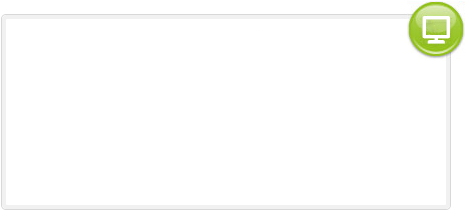

<!-- <!DOCTYPE html>
<html lang="en">
<head>
    <meta charset="UTF-8">
    <meta name="viewport" content="width=device-width, initial-scale=1.0">
    <title>Document</title>
    <style>
        .item {
            display: none;
            width: 300px;
            height: 400px;
            overflow: hidden;
            position: relative;
        }			
        .item>img {
            width: 100%;
            height: auto;
            position: absolute;
            top: 0;
            left: 0;
            right: 0;
            bottom: 0;
            margin: auto;
        }	
        .item.active {
            display: block;
        }
    </style>

</head>
<body>
    <div>
        <button class="prev" >上一页</button>
        <button class="btn">1</button>
        <button class="btn">2</button>
        <button class="btn">3</button>
        <button class="btn">4</button>
        <button class="next" >下一页</button>
    </div>
    <div>
        <ul>
            <li><a href="index.html"></li>
            <li><a href="tss.html"></li>
            <li><a href="new.html"></li>
        </ul>
        <!-- <div class="item active"></div>
        <div class="item"></div>
        <div class="item"></div>
        <div class="item"></div> -->
    </div>
    <script type="text/javascript">
        //封装函数、图片显示的部分、传入获取到的div，和被点击的序号
        function toggle(eles, active) {
            for(var i = eles.length; i--;) {
                eles[i].className = "item"; //先让所有div隐藏
            }
            eles[active].className = "item active";//再让被点击的序号对应的div 显示
        }
        //获取按键和div
        var aBtn = document.getElementsByClassName("btn");
        var aIem = document.getElementsByClassName("item");
        var prev = document.getElementsByClassName("prev");
        var next =  document.getElementsByClassName("next");
        var nowPage = 0; //定义当前页，默认值为0；
            
        for(var i = aBtn.length; i--;) {
                aBtn[i].tab = i;
                aBtn[i].onclick=function(){
                    toggle(aIem,this.tab);
                    nowPage=this.tab; //被点击后，保存当前页的序号
                }
        }
       //下一页
        next[0].onclick = function () {			
                nowPage++;					
                nowPage %= aBtn.length;
                toggle(aIem,nowPage);
        }
        //上一页
        prev[0].onclick=function(){
            nowPage--;
            if(nowPage ==-1){
                nowPage = aBtn.length-1;
            }
            toggle(aIem,nowPage);				
        }
    </script>

</body>
</html> -->


<!-- <!DOCTYPE html>
<html lang="en">
<head>
    <meta charset="UTF-8">
    <meta name="viewport" content="width=device-width, initial-scale=1.0">
    <title>Document</title>
    <style>
        .hide {
            display: none;
        }
    </style>
</head>
 
<body>
    <div class="mu-page-all">
        <!-- ul可换成其他标签，也可在外层套多几层标签 -
        <ul class="mu-page-detail">
            <li>1</li>
            <li>2</li>
            <li>3</li>
            <li>4</li>
            <li>5</li>
        </ul>
        <ul class="mu-page-detail hide">
            <li>6</li>
            <li>7</li>
            <li>8</li>
            <li>9</li>
            <li>10</li>
        </ul>
        <ul class="mu-page-detail hide">
            <li>11</li>
            <li>12</li>
            <li>13</li>
            <li>14</li>
            <li>15</li>
        </ul>
        <ul class="mu-page-detail hide">
            <li>16</li>
            <li>17</li>
            <li>18</li>
            <li>19</li>
            <li>20</li>
        </ul>
        <!-- 这个按钮元素必须严格按照该种写法 -
        <div>
            <button class="mu-page-pre" onclick="muPagePre(event)">上一页</button>
            <!-- 页数需要跟当前显示页面相匹配 -
            <span class="mu-page-num">1/4</span>
            <button class="mu-page-next" onclick="muPageNext(event)">下一页</button>
        </div>
    </div>
    <script>
        <!-- 跳转上一页 -->
        function muPagePre(event) {
            var pre = event.target;
            var detail = pre.parentNode.parentNode.getElementsByClassName('mu-page-detail');
            var num = pre.parentNode.parentNode.getElementsByClassName('mu-page-num')[0];
            let numNow = num.innerHTML.match(/\d+/g)[0]; //文本当前页数，设置为文本的第一个数字，可根据实际情况更改
            if (numNow != 1) {
                let pageNum = numNow - 1;
                num.innerHTML = pageNum + '/' + detail.length;      //文本编辑，可根据实际情况更改
                detail[pageNum].classList.add('hide');
                detail[pageNum - 1].classList.remove('hide');
            }
        }
        <!-- 跳转下一页 -
        function muPageNext(event) {
            var pre = event.target;
            var detail = pre.parentNode.parentNode.getElementsByClassName('mu-page-detail');
            var num = pre.parentNode.parentNode.getElementsByClassName('mu-page-num')[0];
            let numNow = num.innerHTML.match(/\d+/g)[0]; //文本当前页数，设置为文本的第一个数字，可根据实际情况更改
            if (numNow != detail.length) {
                let pageNum = parseInt(numNow) + 1;
                num.innerHTML = pageNum + '/' + detail.length;      //文本编辑，可根据实际情况更改
                detail[numNow].classList.remove('hide');
                detail[pageNum - 2].classList.add('hide');
            }
        }
    </script> -->
</body>
</html>
